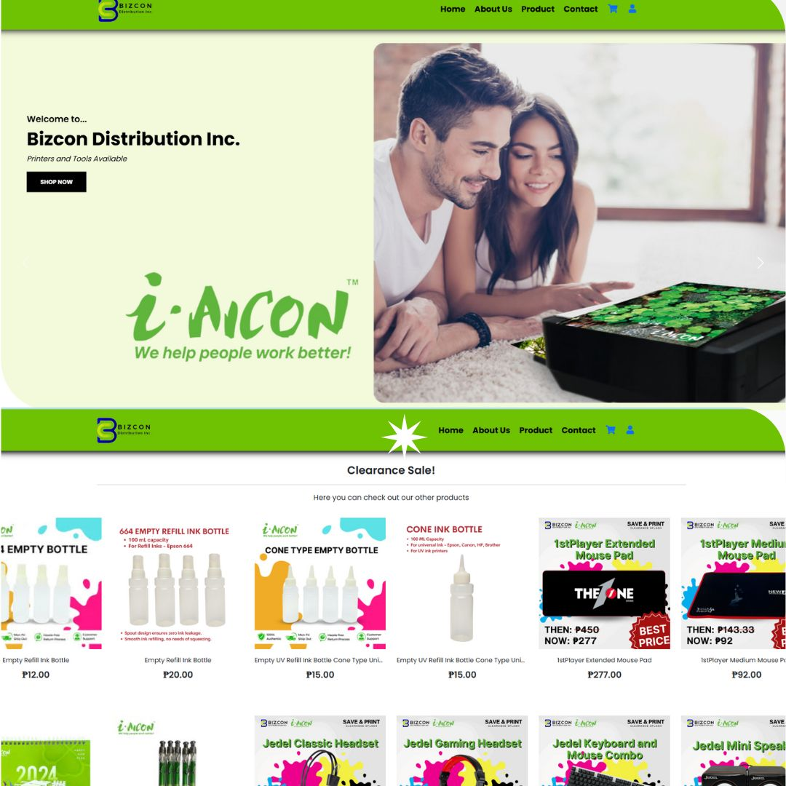
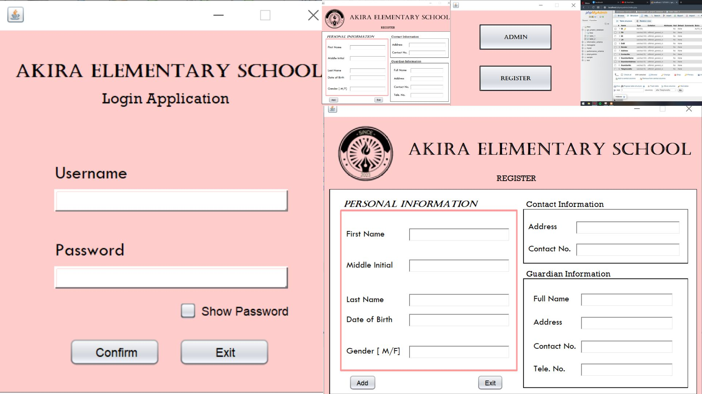
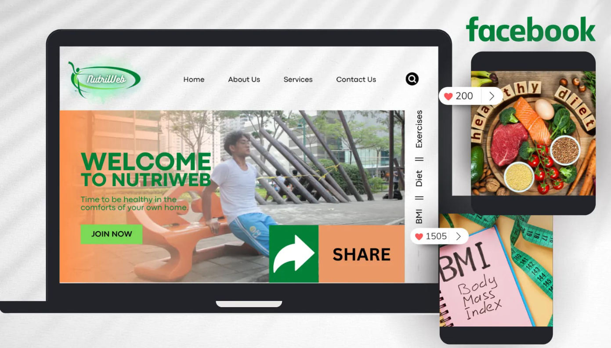
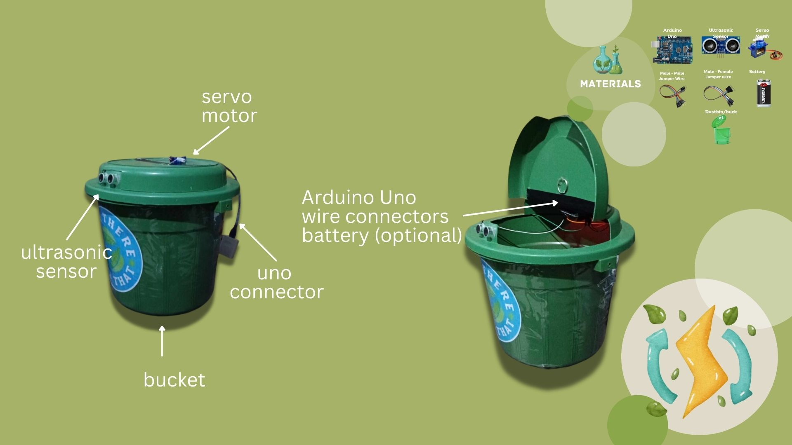
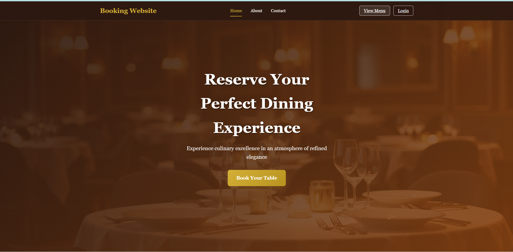

Projects

BIZCON: Business Management Platform
ROBOLUTION: Collaborative Robotics Platform

Online Enrollment System

NutriWeb: Health & Fitness Website

GWAPOAIRLINES

Arduino Based Project

BookingWebsite
×
GWAPOAIRLINES
Objective: Streamlining Flight Booking: An Integrated Web-based Flight Reservation System using PHP and MySQL is a web-based flight reservation system developed using PHP and MySQL. It aims to simplify the process of booking, managing, and paying for flights through an integrated online platform. The system is designed to provide convenience for passengers while improving efficiency for airline operators.
Tools/Tech: PHP, MySQL, HTML, CSS, JavaScript, Web Hosting Server
Impact: Faster and more accessible flight booking, reduced manual errors, and improved customer satisfaction. The project also showcases the application of web development and database integration in real-world airline operations.
- Book, view, and manage flight tickets online
- Integrated payment system
- Real-time flight availability
- User-friendly interface for travelers